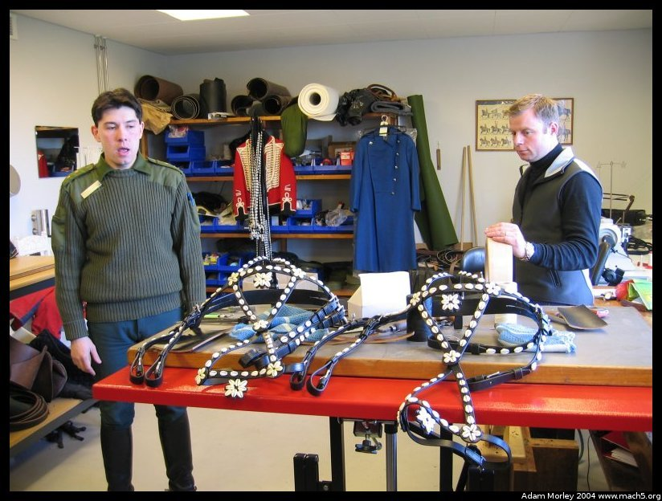

Yes, the title is a word, one word. "The Guards Hussars' Regiment." Here, we were given a brief overview of the Danish military including command structure, org charts, etc. Complete with overheads.
And then we moved into the tour. Horse riding is big in Denmark, but understandably so. They did, after all, spend more years using horses to get around then they have in either buses, cars, or trains. It's kind of neat to be waiting for the bus (to go to school, or the city) and see horses on the street.
The beginning of the tour, complete with military jeep, car with a DK sticker, and a funky lampost.
Inside the base office for the horse regiment there was, on display, a traditional horse bridle. These are hand-made using shells and leather. I once saw one being constructed when I went to the Amagermuseet. The traditional bridles are used when the horse regiment escorts the royalty of Denmark.

We met the man who maintains the clothing, makes the harnesses and other sorts of things. He's on the right. Our tour guide is on the left.Our tour guide in the horseshoeing room. They had a floor made of wood so the horse's feet would not get hurt.
Horse shoes, horse feet and the like.
And even a horse leg.
Young Danes, future horse riders. Danes have a standing draft, where lottery numbers are drawn to pick who actually ends up serving in the military. Not all will serve. But, if you don't want to be in the draft, when it's your year, you can "opt-out" (like so many things in Danish political life), and be a fireman or other civil service person instead.
Look, a horse! That thing above the horse is a sunlamp/heater, to warm the horses up before they take them out for a spin.
Ohio, one of the many horses in the regiment. Our tour guide tells us about the training regiment, where the horses come from, and so on.
This is the smallest horse in the regiment. They bring out this horse to tow little kids in carts, and let them pet the cute little horse. It's quite the attention getter, and it knows it.
And finally, this is the training room for the horses, when it's too dark or cold outside to ride them. Which is often in the winter, as it gets dark at 4:30 or so!
Adam can be reached at adam dot morley at gmail dot com